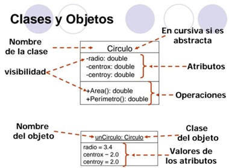

3 - Desarrollo orientado a objetos
El desarrollo de software orientado a objetos (OO) se basa en un ciclo de vida iterativo e incremental. Esto significa que no se hacen todas las fases del desarrollo de una sola vez, sino que se repiten en ciclos, mejorando y refinando el sistema en cada iteración.
Ventajas del enfoque orientado a objetos:
- Reutilización de código (mediante clases ya creadas o librerías).
- Mejora la calidad del software.
- Facilita el mantenimiento.
- Mayor facilidad para adaptarse y escalar proyectos complejos.
Durante el proceso:
- Se identifican clases candidatas.
- Se reutilizan clases existentes, modificándolas o heredando de ellas.
- Se crean clases nuevas cuando no existen en las librerías.
¿Qué es UML? (Unified Modeling Language)
UML es un conjunto de herramientas para modelar sistemas orientados a objetos.
Objetivo: Sirve para entender, especificar, visualizar, diseñar, construir, mantener y documentar el software. Es como hacer los mapas de tu aplicación, antes de construirla.
¿Qué incluye UML?
- Notaciones gráficas para representar clases, objetos, interacciones, actividades...
- Vistas del sistema desde diferentes ángulos: estructural, de comportamiento, de interacción.
- Proviene de diferentes enfoques: modelado OO, modelado de datos, de componentes y de workflows.
Importante:
- No es un método de desarrollo: no te dice cómo pasar del análisis al diseño ni al código.
- Puede integrarse con otras técnicas: patrones de diseño, interfaces gráficas, documentación, etc.
Concepto de modelo y de diagrama en UML
¿Qué es un modelo?
Un modelo es una abstracción de un sistema real. Se hace con el objetivo de comprenderlo mejor antes de construirlo.
- Un modelo representa lo importante del sistema, a un nivel de detalle adecuado para ese momento.
- Puede representar: estructura estática, comportamiento, flujos de datos, casos de uso...
¿Qué es un diagrama?
Un diagrama es la representación gráfica de un modelo (o parte de él).
- Representa elementos (clases, objetos, actividades...) conectados entre sí.
- Puede ser estático (estructura) o dinámico (comportamiento).
- Cada tipo de diagrama ofrece una vista diferente del sistema.
Tipos de diagramas UML básicos:
Diagramas estáticos (estructura):
- No representan interacción ni comportamiento.
- Sirven como mapa del sistema.
- Ejemplos:
- Diagrama de clases
- Diagrama de paquetes
- Diagrama de componentes
Diagramas dinámicos (comportamiento):
- Representan interacción entre elementos y comportamiento del sistema.
- Ejemplos:
- Diagrama de secuencia
- Diagrama de estados
- Diagrama de casos de uso
- Diagrama de actividades
DIAGRAMA DE CLASES - UML
El diagrama de clases representa la estructura estática de un sistema. Describe las clases, atributos, métodos y las relaciones entre ellas.
TIPOS DE RELACIONES EN UN DIAGRAMA DE CLASES
1. Asociación
Es la relación más común en UML. Representa una dependencia semántica entre objetos o clases.
- Se representa con una línea continua entre las clases.
- Puede tener nombre (un verbo que describe la relación).
- Puede tener rol (nombre de cada extremo).
- Puede tener multiplicidad o cardinalidad (1, *, 0..1, etc.).
Ejemplos: Un Profesor enseña un Curso. Una Persona posee una Mascota.
Tipos:
- Unaria: la clase se relaciona consigo misma.
- Binaria: entre dos clases (la más común).
- Ternaria: entre tres clases.
- N-aria: entre tres o más.
2. Herencia (Generalización / Especialización)
Una subclase hereda atributos y métodos de una superclase. También llamada relación padre-hijo.
- Se representa con una flecha con triángulo blanco, apuntando hacia la superclase.
- La subclase añade o especializa comportamiento.
Ejemplo: Animal (superclase) → Perro, Gato, Pez (subclases). Todos pueden respirar (heredado), pero cada uno hace algo distinto: ladrar, maullar, nadar.
Las subclases heredan atributos públicos y protegidos.
3. Agregación
Es una relación de tipo “tiene un”, pero los objetos pueden vivir de forma independiente.
- Representa una relación todo/parte, pero no implica dependencia total.
- Se representa con una línea con rombo blanco en el extremo del “todo”.
Ejemplo: Un Autobús tiene un Conductor. El Conductor puede existir, aunque el Autobús se elimine.
Nota: Agregación = relación dinámica, por referencia.
4. Composición
Es una relación más fuerte que la agregación. Aquí, las partes no pueden existir sin el todo.
- Se representa con una línea con rombo negro en el extremo del “todo”.
- Los objetos “parte” mueren cuando muere el objeto contenedor.
Ejemplo: Una Persona está compuesta por una Cabeza y un Cuerpo. Si la persona no existe, esas partes tampoco.
Nota: Composición = relación estática, por valor.
5. Dependencia
Indica que una clase necesita a otra para realizar una función, pero no forma parte de su estructura interna.
- Se representa con una flecha discontinua (línea de puntos) que apunta desde la clase dependiente a la clase utilizada.
Ejemplo: Una clase Factura que usa Cliente solo para consultar datos, pero no lo contiene como atributo.
Nota: Se usa para señalar una relación temporal y débil.
DIAGRAMA DE CLASES - CARACTERÍSTICAS Y ELEMENTOS CLAVE
Un diagrama de clases es una representación gráfica de las clases de un sistema, junto con sus atributos, métodos y relaciones entre ellas.
¿Qué es una clase?
Una clase es una plantilla o modelo que describe objetos con atributos y comportamientos comunes.
Se representa como un rectángulo dividido en tres secciones:
- Nombre de la clase
- Atributos
- Métodos (operaciones)
ELEMENTOS DE UNA CLASE UML
1. Nombre de la clase
- Se escribe en negrita o centrado en la parte superior del rectángulo.
- Puede estar subrayado si representa una instancia concreta.
2. Atributos (propiedades)
- Representan el estado de la clase.
- Se escriben en la segunda sección del rectángulo.
- Formato: visibilidad nombre: tipo
Ejemplo:
+marca: String
-modelo: String
#serie: int
3. Métodos (operaciones o funciones)
- Representan el comportamiento de la clase.
- Se escriben en la tercera sección.
- Formato: visibilidad nombre(parámetros): tipoRetorno
Ejemplo:
+agregarRopa(): void
+lavar(): void
IDENTIFICAR ELEMENTOS EN UN DIAGRAMA DE CLASES
- Si ves un rectángulo con 3 secciones, es una clase.
- Si hay solo una sección con nombre en formato
nombreObjeto: Clase, es un objeto. - Dentro del rectángulo, si algo tiene
(), es un método. - Si hay
: tipoDato, es un atributo.
+--------------------------------------+
| NombreClase | <-- Nombre de la clase (en negrita o centrado)
+--------------------------------------+
| + atributo1: Tipo | <-- Atributos (propiedades)
| - atributoPrivado: Tipo | (+ público, - privado, # protegido)
| # atributoProtegido: Tipo |
+--------------------------------------+
| + metodo1(param: Tipo): Retorno | <-- Métodos (operaciones o funciones)
| - metodoPrivado(): void | También con símbolos de visibilidad
+--------------------------------------+
Ejemplo gráfico:
DIAGRAMA DE SECUENCIA UML
¿Qué es un diagrama de secuencia?
Representa la interacción entre objetos o clases a lo largo del tiempo. Muestra el orden en que se envían y reciben mensajes entre los objetos para realizar una función o proceso.
Elementos básicos de un diagrama de secuencia
- Objetos:
- Se representan en la parte superior con un rectángulo que contiene el nombre del objeto y su clase, separados por dos puntos:
nombreObjeto: Clase - Puede usarse un nombre genérico si se trata de cualquier instancia de esa clase.
- Se representan en la parte superior con un rectángulo que contiene el nombre del objeto y su clase, separados por dos puntos:
- Línea de vida:
- Una línea vertical que baja del rectángulo del objeto.
- Representa el tiempo de vida del objeto durante la interacción.
- Activación:
- Rectángulo delgado y vertical sobre la línea de vida.
- Indica que el objeto está activo ejecutando una acción.
- Mensajes:
- Flechas horizontales o diagonales que conectan las líneas de vida.
- Representan el envío de un mensaje o llamada de un objeto a otro.
- Tipos de mensajes:
- Llamada de operación: flecha sólida con punta llena.
- Retorno: línea discontinua con punta abierta (se usa para mostrar respuesta).
- Loops (bucles):
- Bloques marcados con un rectángulo que indican que una acción se repite.
- Se puede anotar la condición del bucle.
- Condiciones y fragmentos alternativos:
- Partes del diagrama pueden tener condiciones (if, else) usando marcos con etiquetas como
alt(alternativa) oopt(opcional).
- Partes del diagrama pueden tener condiciones (if, else) usando marcos con etiquetas como
- Destrucción:
- Representa el fin de vida de un objeto.
- Se marca con una X en la línea de vida.
¿Cómo interpretar un diagrama de secuencia?
- Identifica los objetos involucrados y su papel.
- Sigue la línea temporal vertical para ver el orden de mensajes.
- Observa activaciones y respuestas para entender qué procesos se están ejecutando.
- Revisa si hay bucles o condiciones para saber si alguna acción se repite o es opcional.
- Si aparece una destrucción, significa que el objeto termina su vida en ese momento.